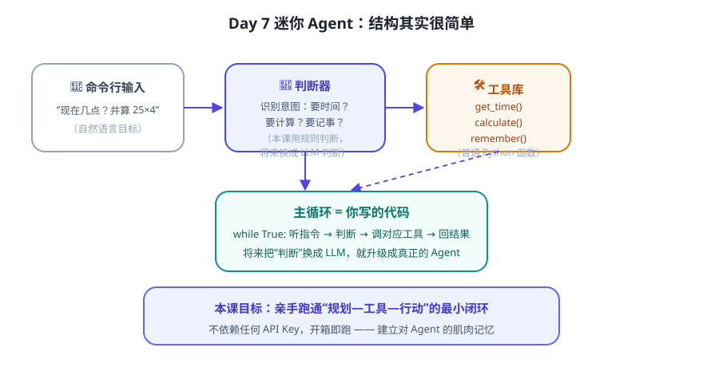

前面 6 天我们“看”懂了 Agent。今天我们要亲手写一个。为了让你看清本质，这个版本故意不用任何大模型 API——用关键词规则当“大脑”。它仍然具备 Agent 的核心结构，跑通之后，你就能一眼看懂后面所有真实框架在干什么。
我们要做什么

它支持 4 类能力：
- 🕐 查时间——工具：get_time()
- 🧮 安全计算——工具：calculate()（只允许数字与四则运算，防止执行任意代码）
- 📝 记忆——工具：remember() / recall()（用字典存事实，按语义相似度检索）
- 💬 对话循环——主循环：听指令 → 规划 → 调工具 → 回结果
第 1 步：确认环境
Mac / Linux 一般自带 Python。在终端执行：
python3 --version
看到 Python 3.x 就说明环境 OK（3.8+ 即可）。
第 2 步：获取代码
课程仓库里已经为你准备好了文件：code/mini_agent.py。完整代码如下（也可以直接复制保存为 mini_agent.py）：
#!/usr/bin/env python3
# -*- coding: utf-8 -*-
"""
迷你 AI Agent —— Day 7 动手练习
================================
一个不依赖任何 API Key、用 Python 标准库就能跑的最小 Agent。
它演示了 Agent 最核心的结构：
输入目标 → 判断意图(规划) → 调用工具 → 返回结果 → 循环
运行方式：
python3 mini_agent.py
然后在提示符后输入，例如：
> 现在几点？
> 帮我计算 (12+8)*3
> 25*4 等于几
> 记住 我住在上海
> 我想起我住在哪
> 看看记忆
> 退出
升级思路：把 plan() 里的“关键词判断”换成大模型来“判断”，
再把工具注册成 Function Calling，就变成真正的 LLM Agent 了（后续课程内容）。
"""
import ast
import datetime
import re
# ---------- 工具 1：时间 ----------
def get_time():
now = datetime.datetime.now()
week = "一二三四五六日"[now.weekday()]
return f"现在是 {now:%Y 年 %m 月 %d 日} 星期{week} {now:%H:%M:%S}"
# ---------- 工具 2：安全计算器 ----------
_ALLOWED_NODES = (
ast.Expression, ast.BinOp, ast.UnaryOp, ast.Constant,
ast.Add, ast.Sub, ast.Mult, ast.Div, ast.FloorDiv, ast.Mod, ast.Pow,
ast.USub, ast.UAdd,
)
def calculate(expr: str) -> float:
"""只允许数字和四则/括号运算，防止执行任意代码。"""
try:
tree = ast.parse(expr, mode="eval")
except SyntaxError as e:
raise ValueError(f"表达式无法解析：{e}")
for node in ast.walk(tree):
if not isinstance(node, _ALLOWED_NODES):
raise ValueError("表达式包含不支持的语法（只支持数字与 + - * / % ** 和括号）")
if isinstance(node, ast.Constant) and not isinstance(node.value, (int, float)):
raise ValueError("表达式里只能出现数字")
# 清空内置函数后求值：安全兜底
return eval(compile(tree, "<calc>", "eval"), {"__builtins__": {}}, {})
# ---------- 工具 3：简易长期记忆 ----------
FACTS = [] # 用列表模拟“长期记忆”，真正产品里会用数据库/向量库
def remember(text: str) -> str:
FACTS.append(text.strip())
return f"已记住：{text.strip()}（目前共 {len(FACTS)} 条记忆）"
def _bigrams(s: str):
s = re.sub(r"\s+", "", s)
return {s[i:i + 2] for i in range(len(s) - 1)}
def recall(query: str) -> str:
"""在记忆里找与问题最相关的一条：用中文二元组算相似度。"""
q = _bigrams(query)
if not FACTS or not q:
return "记忆库还是空的，先对我说：记住 <想记的话>"
best, best_score = None, 0
for fact in FACTS:
score = len(q & _bigrams(fact))
if score > best_score:
best, best_score = fact, score
if best and best_score > 0:
return f"找到相关记忆：{best}"
return "没有找到相关记忆。可以换个说法，或先「记住」它。"
def show_notes() -> str:
if not FACTS:
return "记忆库还是空的。可以输入：记住 <想记的话>"
return "记忆库内容：\n" + "\n".join(f" - {f}" for f in FACTS)
# ---------- 规划器：判断用户意图（本课用关键词规则） ----------
HELP = """我是迷你 Agent，可以帮你做这些事：
* 现在几点？ / 今天几号？ → 查询当前时间与日期
* 计算 (12+8)*3 / 25*4 等于几 → 数学计算（支持 + - * / % ** 和括号）
* 记住 我住在上海 → 把一句话写入记忆
* 我想起我住在哪 → 根据问题检索记忆
* 看看记忆 → 列出所有记忆
* 帮助 / help → 显示本帮助
* 退出 / exit → 结束程序
"""
def plan(text: str) -> str:
"""把用户的话路由到对应工具：这就是 Agent 的『规划』。"""
t = text.strip()
low = t.lower()
if low in {"退出", "exit", "quit", "q"}:
return "__EXIT__"
if low in {"帮助", "help", "?", "h"}:
return HELP
if low in {"看看记忆", "记忆库", "show notes", "notes"}:
return show_notes()
# 时间类
if any(k in t for k in ("几点", "时间", "几号", "日期", "星期")):
return get_time()
# 记忆写入：记住 <一句话>
m = re.search(r"记住\s*(.+)", t)
if m:
return remember(m.group(1))
# 记忆读取：想起/回忆/我住/我叫 等问法
m = re.search(r"(?:想起|回忆|我住|我叫|我的名字)\s*(.+)", t)
if m:
return recall(m.group(1))
# 计算类：先去掉“请/帮我/计算/算一下”等前缀，再匹配“表达式 + 可选问法”
t2 = re.sub(r"^(?:请|帮我|给我)?\s*(?:计算|算一下|算)\s*(?=[0-9(])", "", t)
t2 = (t2.replace("×", "*").replace("÷", "/")
.replace("^", "**").replace("（", "(").replace("）", ")"))
m = re.fullmatch(r"([0-9+\-*/().%* ]+?)\s*(?:等于几|等于多少|是多少|是几|等于|=|？|\?)?\s*", t2)
if m and re.search(r"[+\-*/%]", m.group(1)):
expr = m.group(1)
try:
return f"{expr} = {calculate(expr)}"
except ValueError as e:
return f"计算失败：{e}"
return ("抱歉，我还没学会这件事。试试对我说「帮助」查看我能做什么。\n"
"（在真正的 Agent 里，这里会调用大模型来理解并拆解任务）")
# ---------- 主循环：Agent 的“行动 + 观察 + 再循环” ----------
def main():
print("=" * 56)
print(" 🤖 迷你 AI Agent（Day 7）")
print(" 输入你的目标，输入「退出」结束。输入「帮助」看用法。")
print("=" * 56)
while True:
try:
user = input("\n你 > ").strip()
except (EOFError, KeyboardInterrupt):
print("\n再见！")
break
if not user:
continue
result = plan(user) # 规划：决定做什么
if result == "__EXIT__":
print("再见！今天也进步了一点 👏")
break
print(f"Agent > {result}") # 行动结果：观察并回复
if __name__ == "__main__":
main()
第 3 步：运行它
python3 mini_agent.py
然后依次输入下面这些话，观察 Agent 怎么回应：
现在几点？ 帮我计算 (12+8)*3 25*4 等于几 记住 我住在上海 我想起我住在哪 看看记忆 退出
你会看到它“听指令 → 判断 → 调工具 → 回答”的完整过程。试试故意输入它不会的（比如“帮我订机票”），看它怎么“诚实承认不会”。
第 4 步：小改造（选做但强烈推荐）
- 加一个工具：模仿 get_time()，写一个
get_todo()，支持“记待办 / 看待办”，并把它接进 plan()。 - 改“大脑”：找到 plan() 里那几行关键词判断，想想如果换成 LLM 来判断意图，程序结构哪里会变？
- 观察安全设计：calculate() 为什么用 ast 白名单而不是直接 eval？试着输入
计算 __import__("os").system("ls")，看它会不会乖乖执行（它不会）。
💡 这个“玩具”和真实 Agent 差在哪？
真实的 LLM Agent：① 用大模型理解任意自然语言（而不是关键词）；② 用 Function Calling 注册几十个工具，模型自己选；③ 记忆用向量数据库做语义检索；④ 有循环上限、错误处理、人工确认等工程保护。后面的课程就是一步步把这些“升级”填上。
真实的 LLM Agent：① 用大模型理解任意自然语言（而不是关键词）；② 用 Function Calling 注册几十个工具，模型自己选；③ 记忆用向量数据库做语义检索；④ 有循环上限、错误处理、人工确认等工程保护。后面的课程就是一步步把这些“升级”填上。
本周复盘（Day 1–7）
| 天 | 核心收获 |
|---|---|
| Day 1 | Agent = 以 LLM 为大脑、能自主完成任务的应用形态 |
| Day 2 | LLM 是“接龙大师”：预测下一个 Token，有幻觉等局限 |
| Day 3 | 四要素（规划/记忆/工具/行动）+ 工作循环 |
| Day 4 | 提示词五要素：角色/背景/任务/要求/输出格式 |
| Day 5 | Function Calling 闭环 + 安全铁律 |
| Day 6 | 三种记忆；长期记忆靠向量检索而非硬塞 |
| Day 7 | 亲手跑通一个迷你 Agent |
📌 今日小结
最小 Agent 结构输入 → 规划（判断意图）→ 工具 → 记忆 → 循环
文件位置code/mini_agent.py（本仓库内，开箱即跑）
升级方向把关键词“大脑”换成 LLM + Function Calling + 向量记忆
下一周预告第二周：提示词进阶 → 上下文工程 → 工具实战 → RAG，让 Agent 真正变聪明